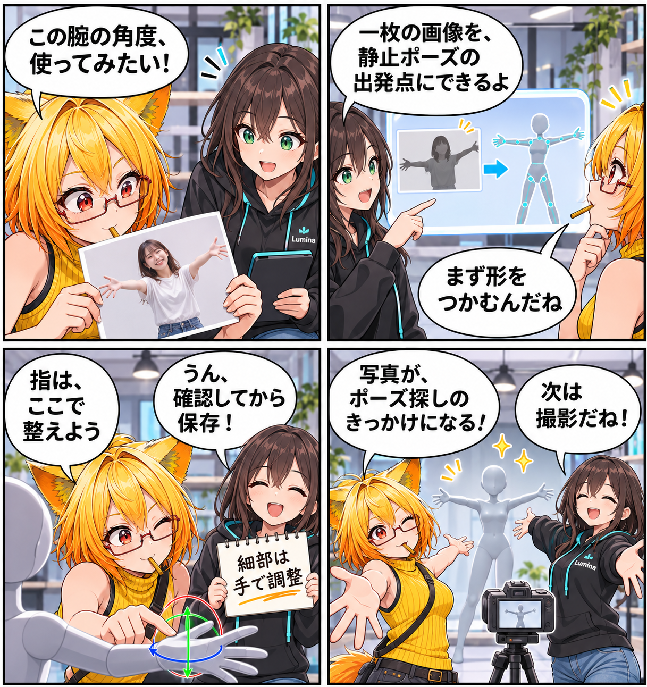

2026.11.11 / Development Log / Feature Spotlight
閑話休題：一枚の写真から、ポーズのきっかけをつかむ
新規実装の報告ではなく、VRASに既にある「AI画像ポーズ」を紹介します。人物が写った一枚の画像を手がかりに、現在選んでいるアバターへ静止ポーズを適用し、そこから手動で整えていくための機能です。
今回は feature-spotlight（機能紹介） です。集計期間は2026-11-10 03:00:00 JSTから2026-11-11 02:59:59 JSTまで、対象はViewerの
main です。集計終了時点のHEADは c33733a41be121b814a1732df8c9eae089ace2ea、期間内コミットは0件でした。MainScene.unity の未コミット差分は、期間内に実装された事実を確定できないため実績には含めていません。
写真を、最初の手がかりにする
Desktopの「ポーズ > プリセット」では、AI画像ポーズが有効な配布ビルドに限り、画像を選んで現在のアバターへ静止ポーズを適用できます。1枚の人物画像を起点に、まずは撮りたい構図へ近づくための入口です。
体の向きを読み取り、アバターへ渡す
画像は向きを正規化し、必要なら長辺2048pxへ縮小してから推論します。肩・腰・腕・脚・頭などの姿勢をアバターのHumanoid骨格へ渡します。人物が小さい、または端にいるときは、同じ推論モデルで人物領域を取り直して補う場合があります。
最後の仕上げは手で行う
単眼画像だけでは奥行きや隠れた手足に曖昧さが残ります。AI画像ポーズは完成したモーションを自動生成する機能ではなく、静止ポーズの出発点です。指や細かな関節は既存のポーズ編集で確認・調整し、納得したときだけ現在のポーズとして保存します。
今回の紹介範囲
AI画像ポーズは静止ポーズ用です。動画解析や連続モーション生成、VR内での画像ファイル選択は今回の対象外です。また、AIポーズを含めない配布ビルドでは関連UI自体が表示されません。
4コマの話
ろひが参考写真の「腕の角度、いいな」と気づき、ルミナが一枚の画像から始められることを案内します。最後は、推定結果をそのまま決定せず、二人で少し手を入れて撮影の準備へ。写真は答えではなく、ポーズを探すきっかけです。
まとめ
VRASのAI画像ポーズは、一枚の人物画像から静止ポーズ作りを始める既存機能です。読み取った結果を手動調整につなげ、アバターらしい一枚へ近づけます。